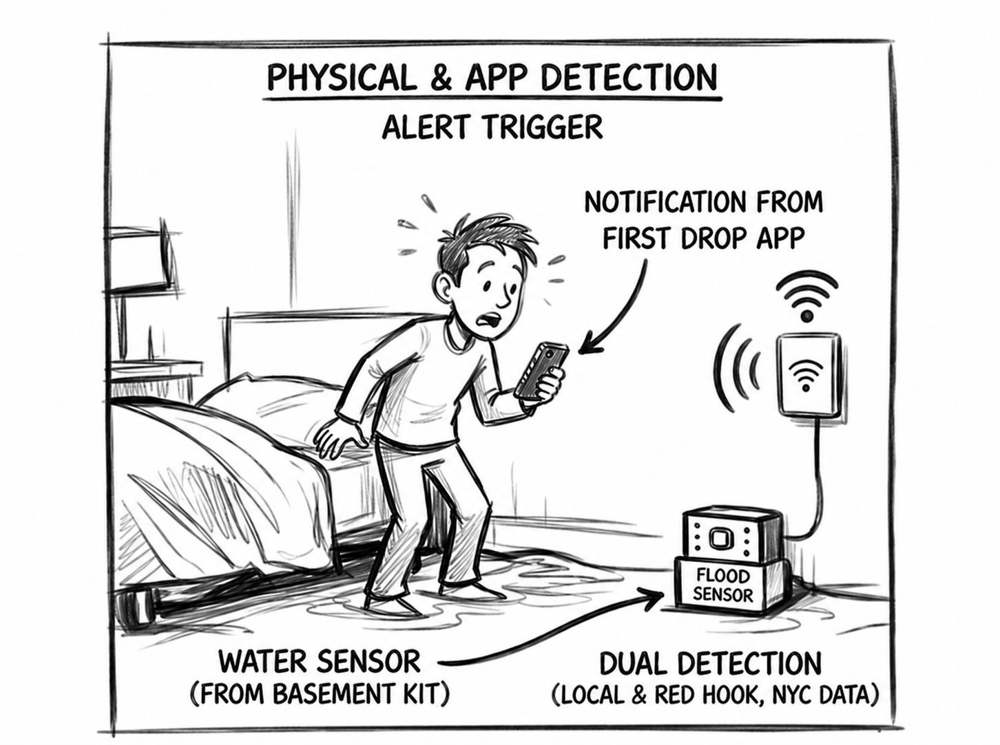
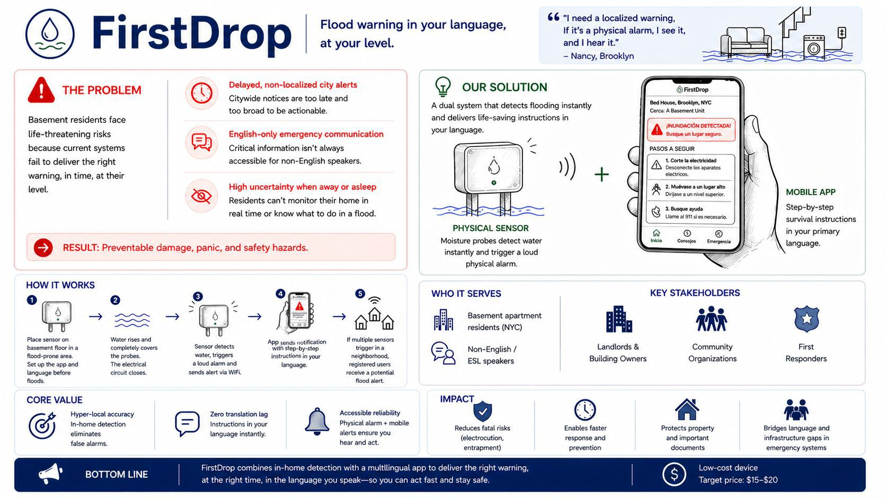
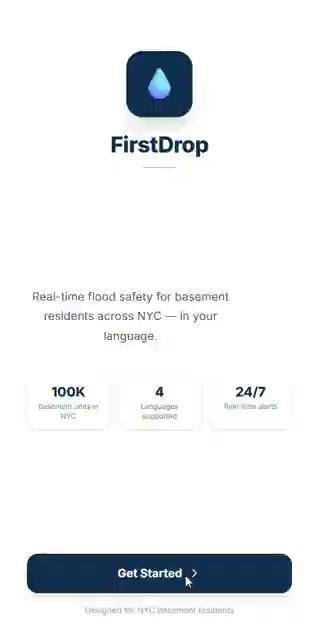
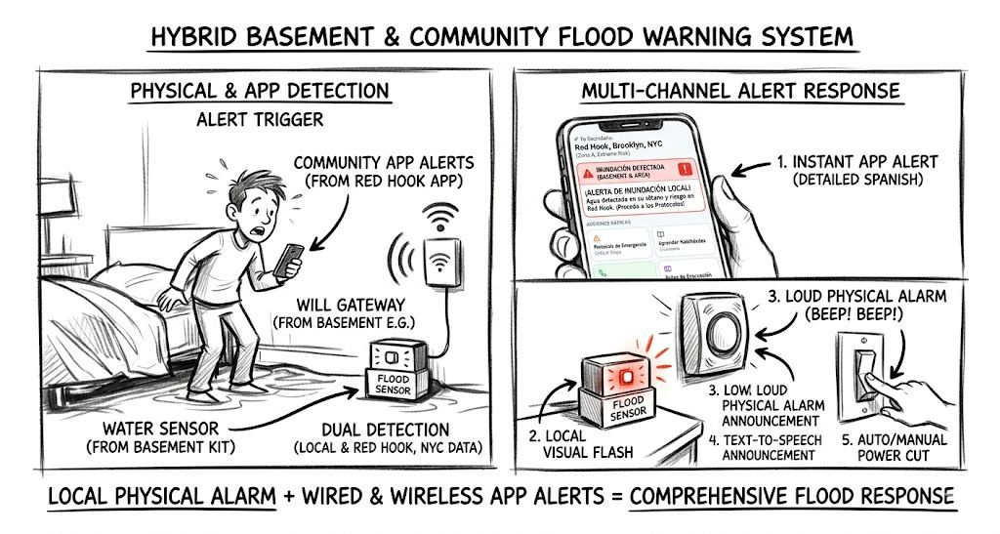

1. The Problem Space
Systemic infrastructure failures and delayed, English-only city alerts leave vulnerable basement residents in NYC completely exposed to immediate, life-threatening hazards like flooding and electrocution. Our target users are non-English or ESL speakers living in NYC basement apartments. They manage a constant mental burden during the rain, often performing preventative labor and relying on slow community translations.

2. Collaboration & Role
I collaborated with my teammates Kevin and Emily to ideate and prototype throughout the human-centered design framework format. My role touched on synthesizing community pain points into clear user narratives, designing the interaction ecosystem between the physical alarm and our hypothetical app flow, and exploring the accessibility constraints affecting our core demographic.
3. Research & Ideation
Our insights were drawn from residents like Nancy from Brooklyn ("I need a localized warning... if it's physical, I see it and hear it") and Ray from Queens ("Inefficient sewers flooded my home. The biggest risk was electrocution"). We designed a hybrid hardware-plus-software product. A physical sensor eliminates internet dependency constraints for immediate audio alerting, while a paired digital app circumvents translation lags by delivering tailored protocols upon waking the user up.
4. The Solution: FirstDrop
FirstDrop pairs a moisture-sensitive floor sensor with an app. The physical sensor detects water when its electrical probes are submerged, triggering a local audio alarm and prompting the user to open the app. The app instantly pushes step-by-step survival protocols in the user’s primary language (e.g., Mandarin-speaking communities in Flushing). It also serves as a hyper-local neighborhood alert if multiple adjacent sensors trigger.


5. Challenges & Iterations
One major consideration was internet dependency and ensuring fairness. Using an existing, basic moisture sensor keeps costs low ($15-$20), and the loud physical alarm ensures immediate wake-ups independently of a Wi-Fi connection. The app supplements this by addressing the linguistic and remote-monitoring gap. Relying solely on official city communication channels (like LinkNYC) would be too slow, so we iterated toward a "localized unit-first, community-second" data loop.

6. Impact & Reflections
Impact: FirstDrop has the potential to eliminate translation lags and provide hyper-localized warnings directly bridging the gap between a low-tech hardware alert and modern multilingual interfaces. If deployed, distributing this through local community hubs (churches, neighborhood centers) could exponentially increase readiness.
Takeaways: Technology should address the marginalized first. In disaster scenarios, simple solutions (a loud hardware beep) combined with adaptive digital tools (a translated step-by-step guide app) often form the strongest interventions against bureaucratic inefficiencies.